Rust, from zero
install to control flow, in one go. no systems background needed.
Why Rust?
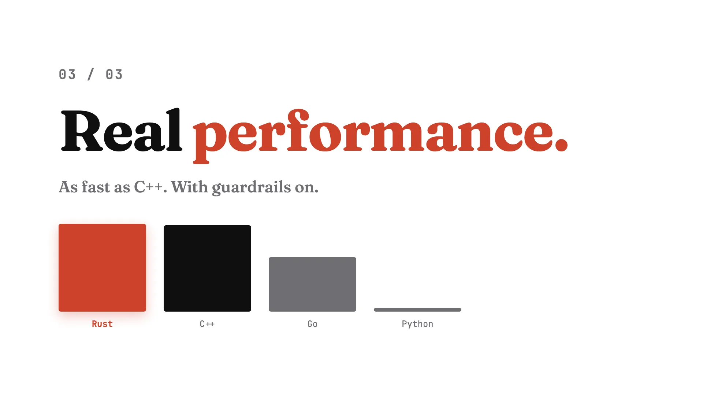
Rust is the fastest-growing language around, and JetBrains called it the future of programming. Three reasons hold that up:
- Memory safety. Rust catches whole categories of bugs at compile time, the kind other languages catch at three a.m. in production.
- Fearless concurrency. You can write multi-threaded code, and the compiler proves it's free of data races before it runs.
- Real performance. As fast as C++, with guardrails on. No garbage-collector pauses, no surprises.
Remember: safe, fearless, and as fast as C++.
Setup
Book · Ch 1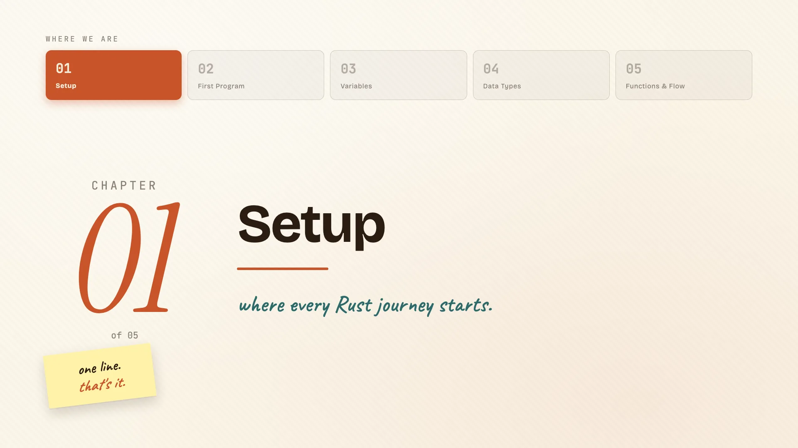
Where every Rust journey starts. One line, that's it.
Install Rust
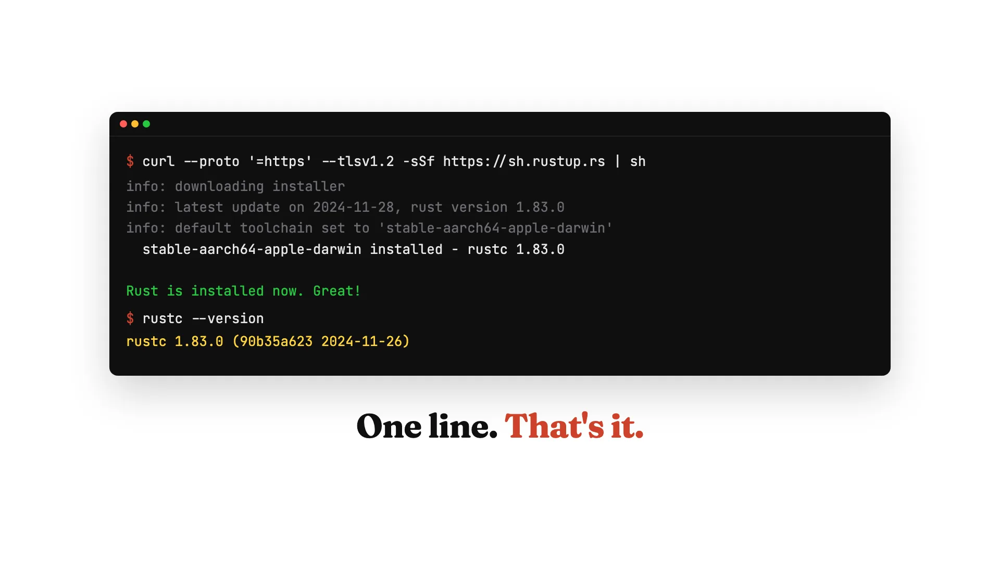
Installing Rust is one command. Open a terminal, paste, hit enter:
curl --proto '=https' --tlsv1.2 -sSf https://sh.rustup.rs | sh
That sets up rustup, the official installer. Confirm it worked:
rustc --version
# rustc 1.83.0
Remember: one line. that's it.
cargo new vs cargo init
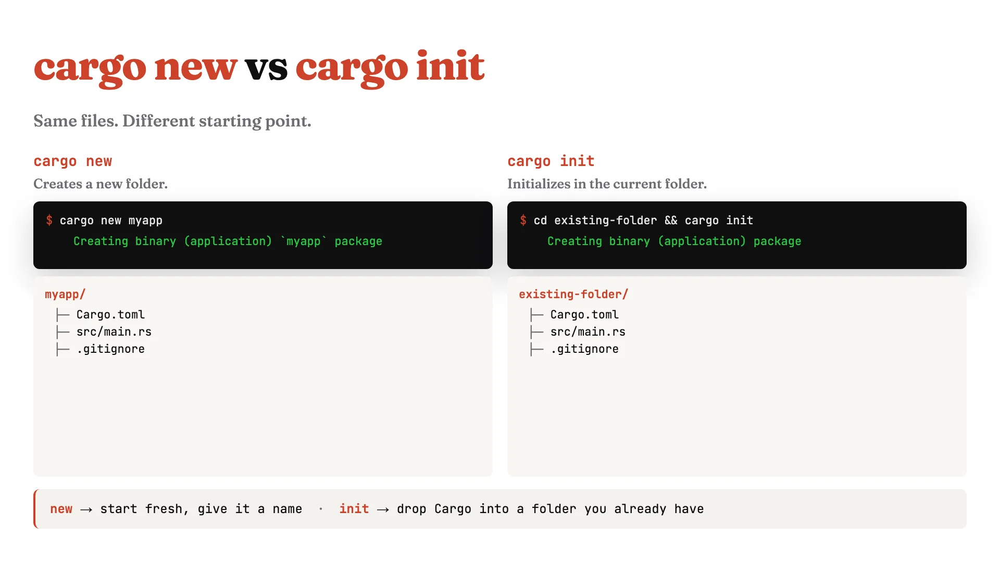
Cargo is Rust's build tool and package manager. Two ways to start a project:
cargo new myapp # creates a fresh folder
cd existing-folder && cargo init # drops Cargo into a folder you have
Same files come out either way (Cargo.toml, src/main.rs, .gitignore). Different starting point.
| Command | Use it when |
|---|---|
cargo new myapp |
starting fresh, give it a name |
cargo init |
adding Cargo to a folder you already have |
Remember: new starts fresh. init drops into a folder you already have.
What cargo gives you
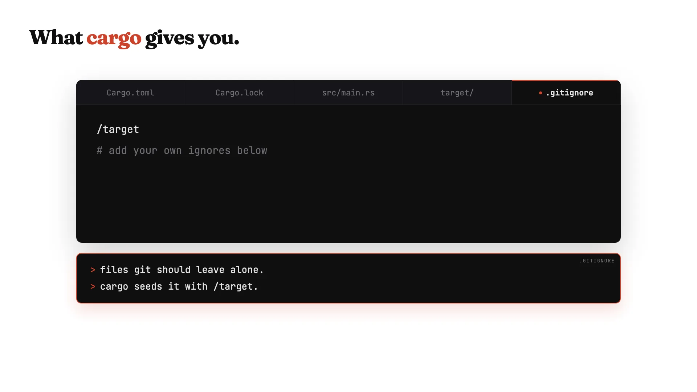
Five files, each with one job:
| File | What it does |
|---|---|
Cargo.toml |
project metadata: name, version, dependencies. the file you edit |
Cargo.lock |
pins exact versions. auto-generated, don't hand-edit |
src/main.rs |
where you write Rust (main.rs for binaries, lib.rs for libraries) |
target/ |
compiled output and build cache. always gitignored, can be huge |
.gitignore |
cargo seeds it with /target |
Remember: five files, each with one job.
First Program
Book · Ch 1-2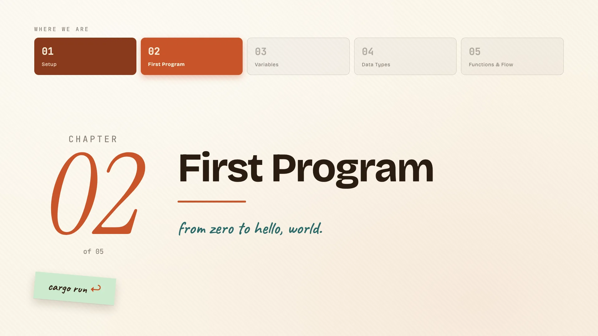
From zero to hello, world.
Hello, world
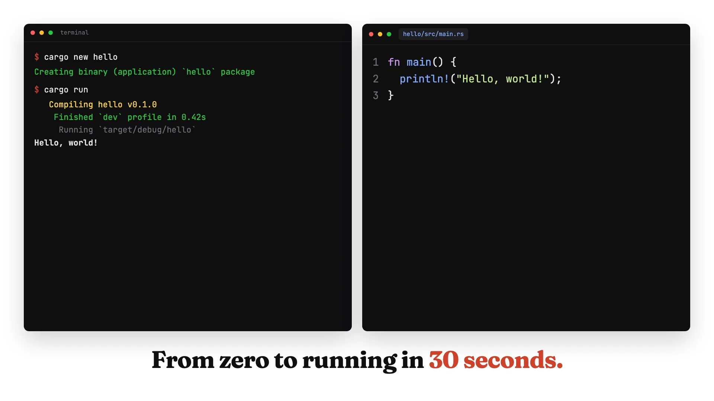
fn main() {
println!("Hello, world!");
}
Run cargo new hello, open main.rs, and there's the classic. Then:
cargo run
# Compiling hello v0.1.0
# Hello, world!
Cargo compiles your code and runs it. From zero to running in thirty seconds.
Remember:
cargo runcompiles and runs in one step.
fn main, piece by piece
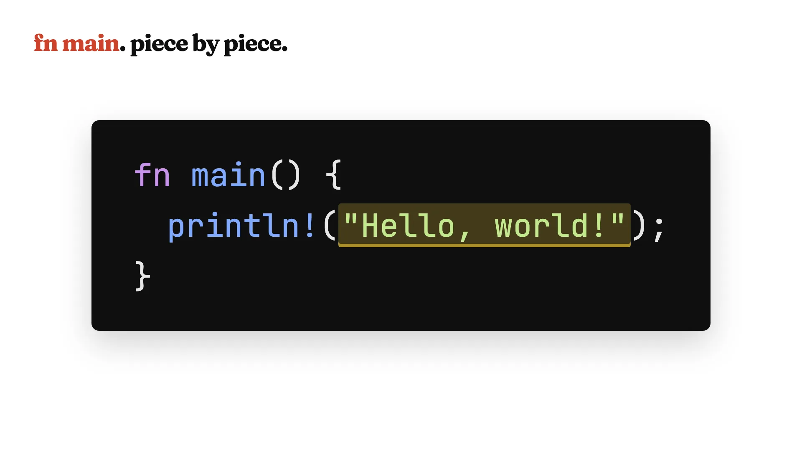
fn main() {
println!("Hello, world!");
}
fnis the function keyword. Every function starts here.mainis the entry point. Rust runs it first, and every binary needs exactly one.()meansmaintakes no arguments.{ }is the body, the code that runs when called.println!is a macro. The!is how Rust marks a macro, not a regular function. Macros expand at compile time."..."is a string literal, the text that gets printed.
Remember: the
!means it's a macro, not a function.
Variables and mutability
Book · §3.1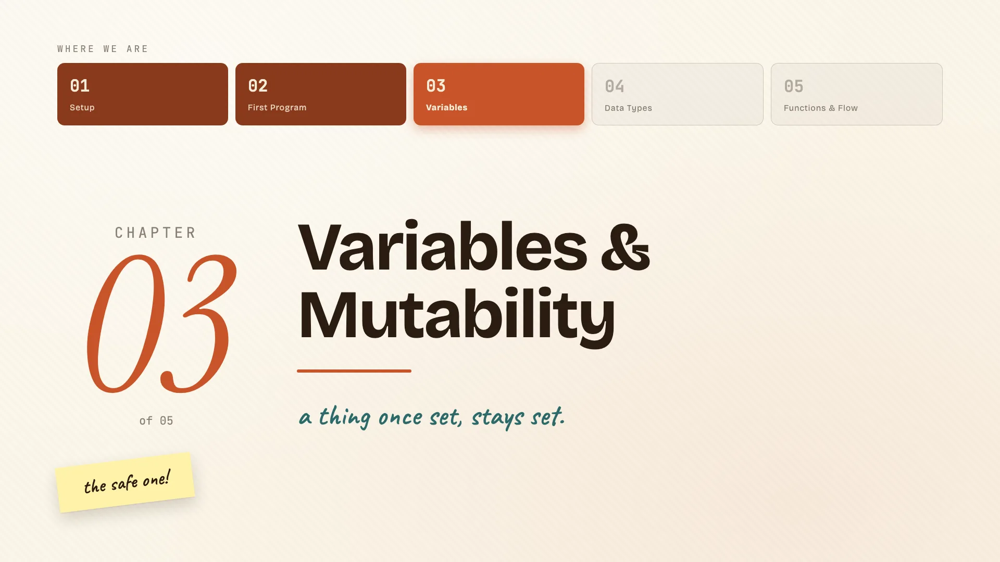
A thing once set, stays set. Unless you opt out.
Variables and let
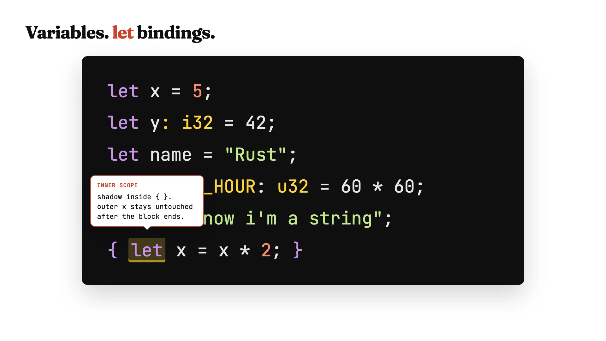
let x = 5; // Rust infers i32
let y: i32 = 42; // or annotate the type
let name = "Rust";
const ONE_HOUR: u32 = 60 * 60;
letbinds a value to a name. Rust infers the type from the value (i32is the default integer).- Annotate with
: typewhen you want to be specific. constneeds a type, usesSCREAMING_SNAKE_CASE, and is evaluated at compile time.
Shadowing: use let again with the same name to make a brand-new binding, handy for changing type:
let spaces = " ";
let spaces = spaces.len(); // now a number
Remember:
letbinds. variables are immutable by default.
mut vs shadowing
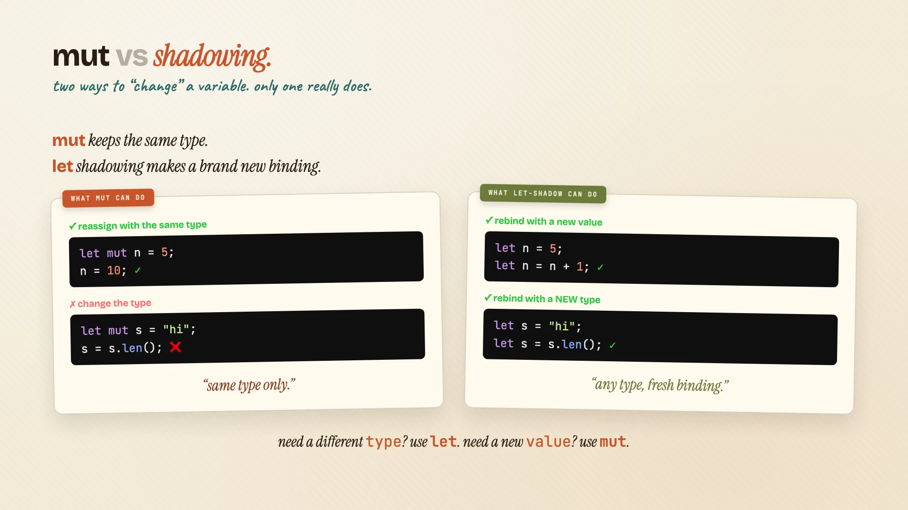
Variables are immutable by default. Try to reassign and the compiler refuses:
let x = 5;
x = 6; // error
let mut x = 5;
x = 6; // ok
But mut and shadowing are not the same thing:
| keeps the type? | what it does | |
|---|---|---|
mut |
yes | change the value, not what it is |
let shadowing |
no | same name, brand-new binding, fresh type |
let mut s = "hi";
s = s.len(); // error: mut can't change the type
let s = "hi";
let s = s.len(); // ok: shadowing can
Remember: need a new type? use let. need a new value, same type? use mut.
Data types
Book · §3.2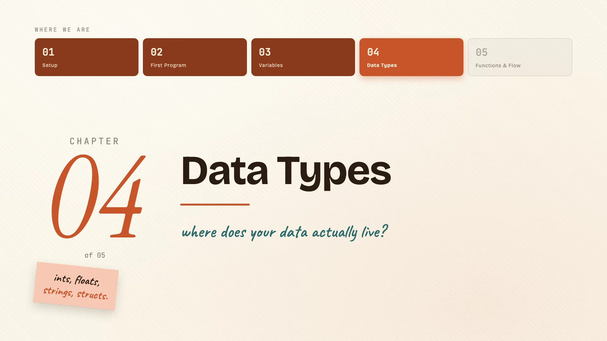
Where does your data actually live? Ints, floats, strings, structs.
Scalar types
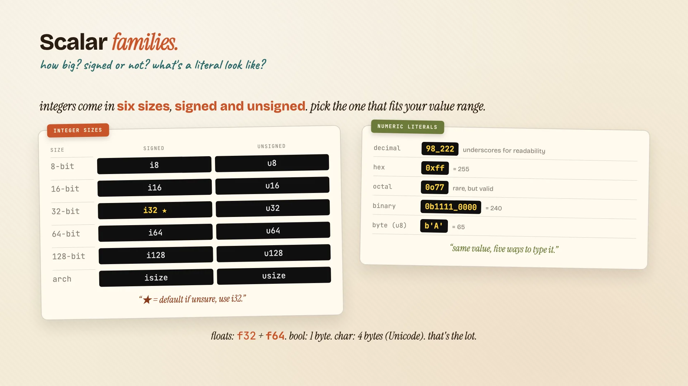
Scalar types hold a single value. Five flavors:
let count: i32 = 42;
let big: u64 = 2_000_000_000;
let pi: f64 = 3.14;
let active: bool = true;
let cat: char = '😻';
i32is the default integer (32-bit signed, fastest on most CPUs). Unsigned types likeu64are zero or positive only.f64is the default float.boolistrue/false, one byte. No truthy ints, be explicit.charis a single Unicode scalar, four bytes, single quotes. Emoji works.
Integers come in six sizes (i8..i128, plus isize/usize), signed and unsigned. If unsure, use i32. Literals: decimal 98_222, hex 0xff, octal 0o77, binary 0b1111_0000, byte b'A'.
Remember: if you're not sure which integer, use
i32.
Tuples and arrays
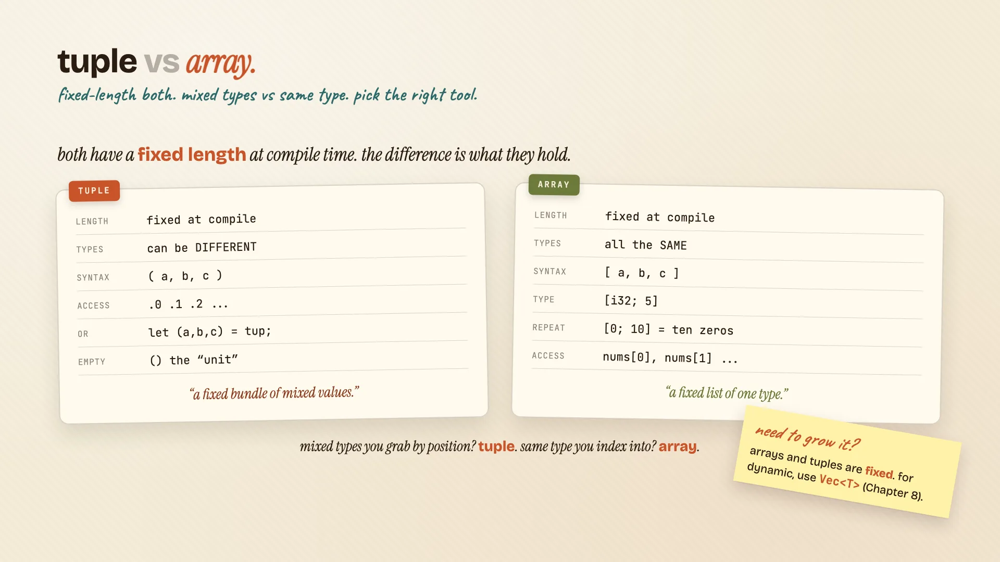
Compound types group values into one. Two flavors, very different:
// tuple: mixed types, fixed length
let pair: (i32, f64) = (10, 6.4);
let (x, y) = pair; // destructure
let first = pair.0; // 10
// array: same type, fixed length
let nums: [i32; 5] = [1, 2, 3, 4, 5];
let zeros = [0; 10]; // ten zeros
let item = nums[0]; // 1
| Tuple | Array | |
|---|---|---|
| types | can differ | all the same |
| access | .0, .1, or destructure |
nums[0] (zero-indexed) |
| note | () is the "unit" |
out-of-bounds panics |
Both are fixed at compile time. Need to grow it? That's a Vec (chapter 8).
Remember: mixed types by position? tuple. same type you index into? array.
Your first struct
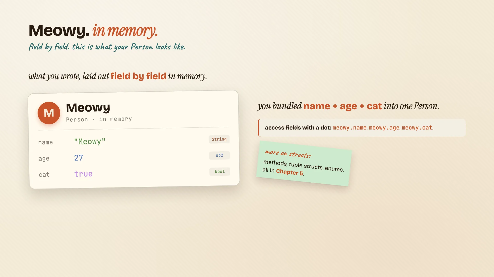
A struct is your custom shape for related data:
struct Person {
name: String,
age: u32,
cat: bool,
}
let meowy = Person {
name: String::from("Meowy"),
age: 27,
cat: true,
};
- Define it with
structand aPascalCasename. List each field asname: type. - Make an instance with the type name and curly braces, filling every field. Access fields with a dot:
meowy.name. nameusesString::frombecause the field wants an ownedString, not a&strliteral.
There's much more (methods, tuple structs, enums), but that's chapter 5, episode 03.
Remember: a struct bundles related fields into your own type.
Functions and flow
Book · §3.3-3.5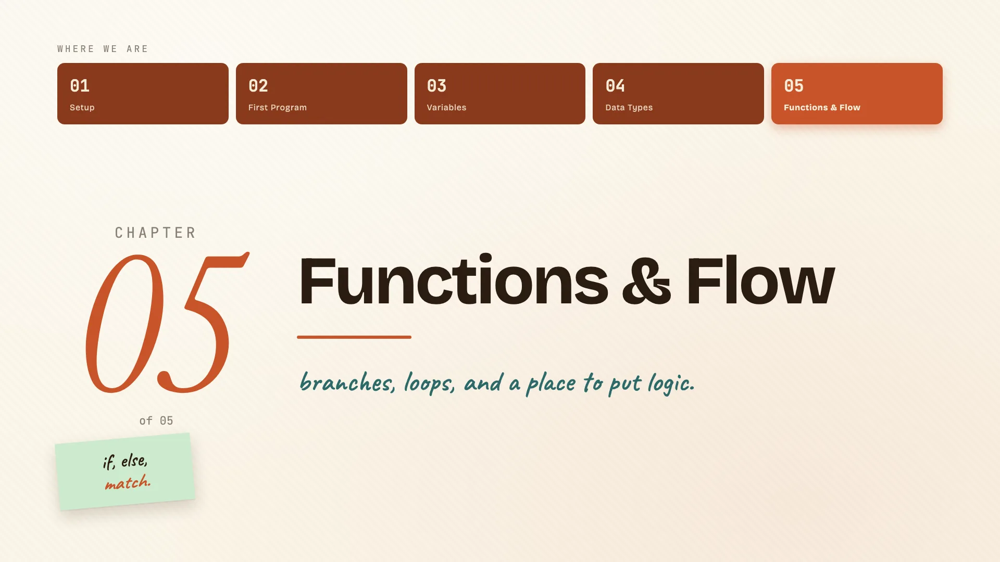
Branches, loops, and a place to put logic. if, else, match.
Functions
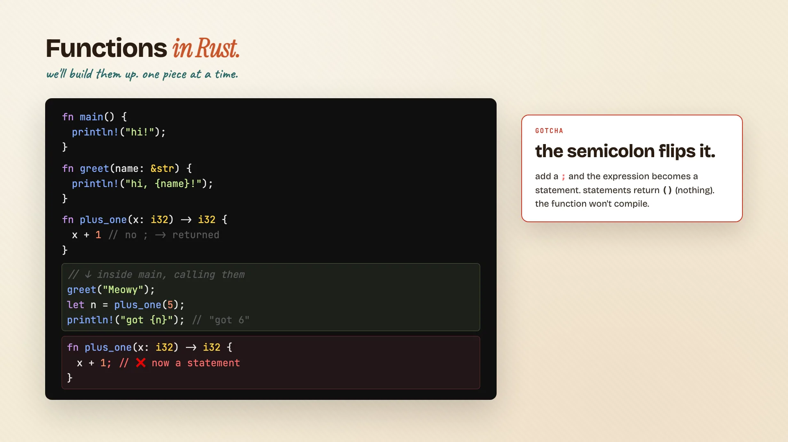
fn greet(name: &str) {
println!("hi, {name}!");
}
fn plus_one(x: i32) -> i32 {
x + 1 // no semicolon -> this is returned
}
let n = plus_one(5); // 6
fndeclares a function, parens for parameters,snake_caseby convention.- Parameters always need an explicit type. Rust never infers them.
- Return types use
->. The last expression with no semicolon is the return value. - The gotcha: add a semicolon and the expression becomes a statement, which returns
()(nothing), and the function won't compile.
Remember: last expression, no semicolon, is the return. watch that semicolon.
Comments
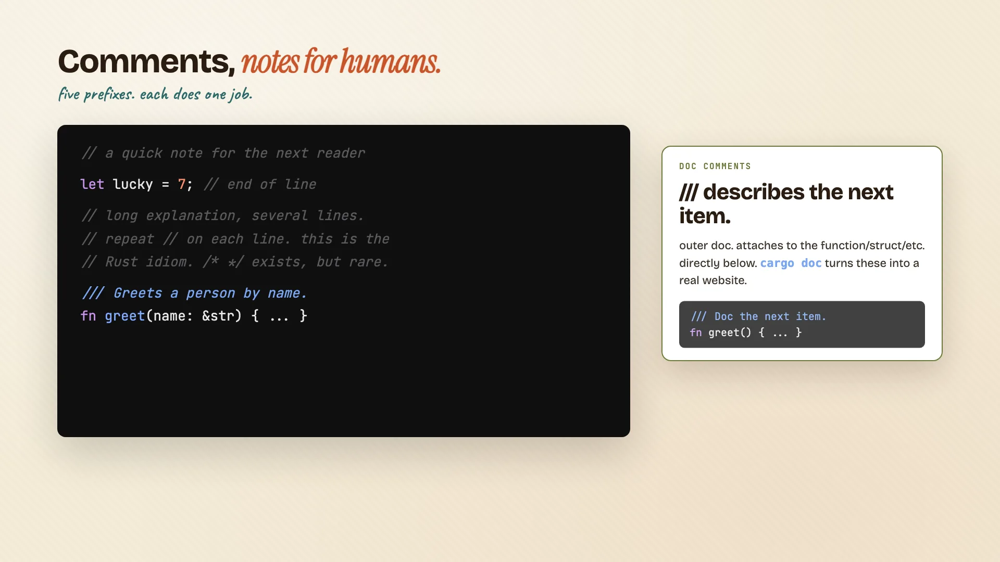
Five prefixes, each one job:
// a line comment
//
// repeat // for multi-line, the Rust idiom
/// outer doc comment, attached to the next item (cargo doc renders it)
//! inner doc comment, for the file or module itself
//is a line comment. Repeat it for multi-line (cleaner git diffs than/* */).///is an outer doc comment, attached to the item below, turned into a docs website bycargo doc.//!documents the file or module itself.
Remember:
//notes,///docs the next item,//!docs the file.
if and else
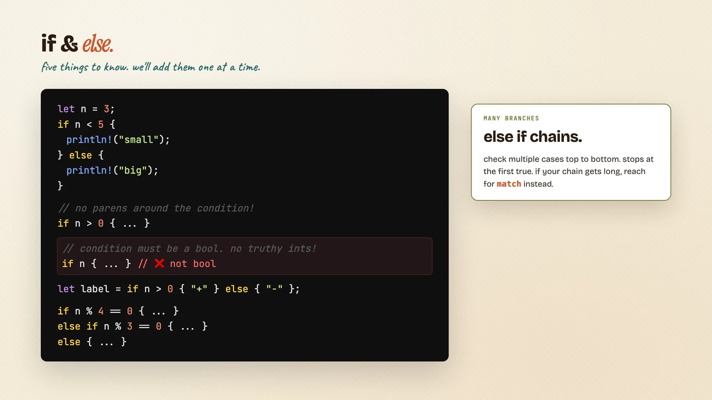
let n = 3;
if n < 5 {
println!("small");
} else {
println!("big");
}
- No parens around the condition (unlike C/Java/JS).
- The condition must be a
bool. Rust won't auto-convert an int, so writen > 0. ifis an expression, it can return a value:
let label = if n > 0 { "+" } else { "-" };
Both arms must return the same type. For more cases, chain else if, top to bottom. If the chain gets long, reach for match.
Remember: no parens, must be a bool, and
ifreturns a value.
Loops
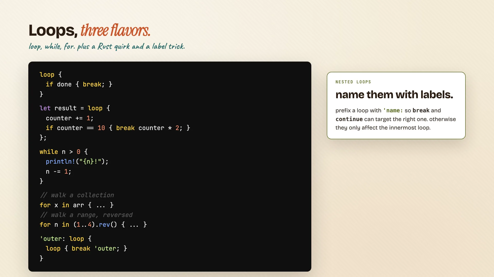
Three loop types:
loop { // runs forever until you break
if done { break; }
}
let result = loop {
counter += 1;
if counter == 10 { break counter * 2; } // break can return a value
};
while n > 0 { n -= 1; } // checks a condition each time
for x in arr { ... } // walks a collection or range
for n in (1..4).rev() { ... }
loopruns until youbreak, andbreakcan return a value.whilechecks a condition before each pass.forwalks a range or collection. Safest (no off-by-one) and usually fastest. When in doubt, reach forfor.
Label nested loops to target the right one:
'outer: loop {
loop { break 'outer; }
}
Remember: loop, while, for. when in doubt,
for.
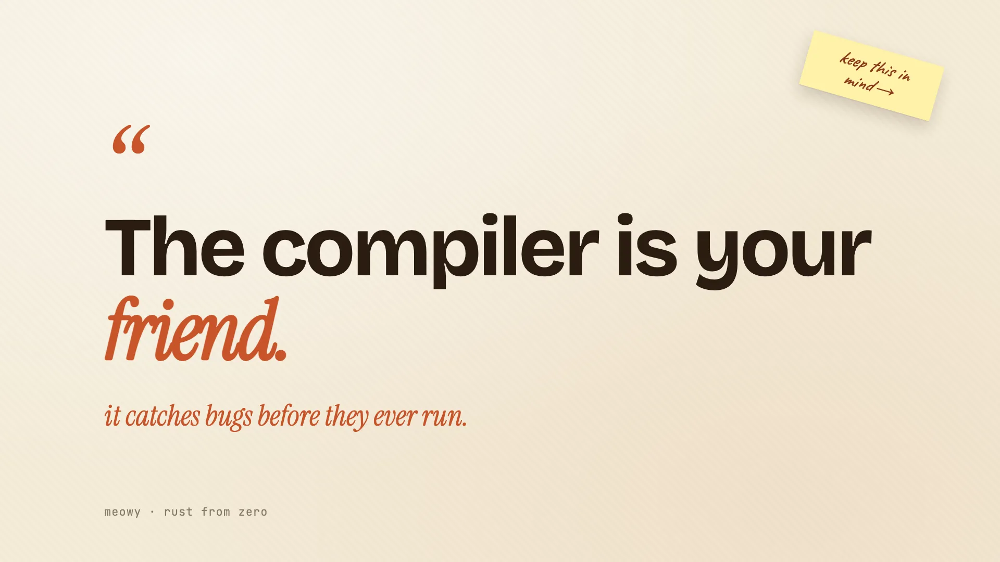
The one thing to carry into every Rust file:
The compiler is your friend. It catches bugs before they ever run. That's the Rust difference.
Cheatsheet recap
One line per idea, in order. Skim this when you just need the reminder.
| Idea | Remember |
|---|---|
| Why Rust? | safe, fearless, and as fast as C++. |
| Install Rust | one line. that's it. |
| cargo new vs cargo init | new starts fresh. init drops into a folder you already have. |
| What cargo gives you | five files, each with one job. |
| Hello, world | cargo run compiles and runs in one step. |
| fn main, piece by piece | the ! means it's a macro, not a function. |
| Variables and let | let binds. variables are immutable by default. |
| mut vs shadowing | need a new type? use let. need a new value, same type? use mut. |
| Scalar types | if you're not sure which integer, use i32. |
| Tuples and arrays | mixed types by position? tuple. same type you index into? array. |
| Your first struct | a struct bundles related fields into your own type. |
| Functions | last expression, no semicolon, is the return. watch that semicolon. |
| Comments | // notes, /// docs the next item, //! docs the file. |
| if and else | no parens, must be a bool, and if returns a value. |
| Loops | loop, while, for. when in doubt, for. |
Practice: Rustlings
00_intro, 01_variables, 02_functions, 03_if, 04_primitive_types.